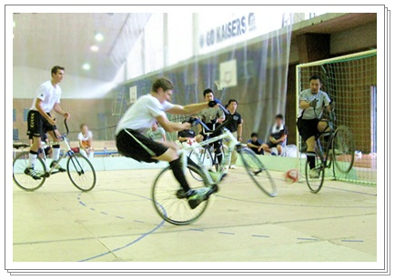
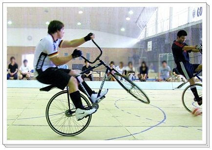

REPORT ～ レポート ～
２０１２年UCI世界室内自転車競技選手権大会
2012年 世界室内自転車競技選手権 ドイツ・アッシャッフェンブルグ大会 *** 日本代表選手団 団長 宮川 廣平
去る11月4日(金)～6日(日)の日程にて日本代表選手団は10名にて結団、ドイツ・アッシャッフェンブルグでの世界選手権へ参戦。サイクルサッカーは昨年度から2年連続で木下直也・松田鋼組(VfH東京)、セカンドチーム藤田洋介・時倉宗大組（蔵前）、サイクルフィギュアは男子シングル芝山耕輔（VfH東京）、女子シングル佐藤凪沙(SFCアンジー)というエントリーとなった。
11月初旬とはいえ、ドイツは冷え込みが厳しく、また期間中は雨にも見舞われる天候のもと、アッシャッフェンブルグの会場には世界各地から多くのアスリートと観客が訪れ熱戦が繰り広げられた。今年度の会場は比較的狭目のフロアにコート中央に配置し、周囲に特設観客席を増設して計4500席を集約。観客席とコートが密接し、歓声が反響しやすい「盛り上がり」重視のレイアウトであった。フランクフルトから車で1時間程度のドイツ中心部というアクセスもあり、メインプログラムの時間帯は満席・立ち見客多数の状態となった。日本選手団は31日(水)現地集合という従来とは異なる形式にて召集。事前合宿を実施しなかった点には賛否あるが、今回のメンバーの経歴や開催地アクセスなどを考慮しての判断であり、調整等での影響は無かったと思っている。
サイクルサッカーは今年もグループB(二部リーグ)優勝、グループA復帰を命題として戦ったが、全勝対決の最終戦でルーマニアと引き分け、得失点差で及ばずグループB2位に終わった。今年のグループBは昨年の5ヶ国から7ヶ国に増え、試合数も6試合となった。日本にとっては、決戦のルーマニア戦まで5試合を経由してフロアや雰囲気を体感できることは歓迎すべきプラス材料であった。事実、初戦のハンガリー戦では硬さが残るプレーが目立ち(前半1-0で折り返し、後半突き放して5-2で勝利)、若いメンバーが思い切った攻撃を仕掛けてくるマレーシア相手には後手に回る部分もみられた(5-3で勝利)。思い通りにいかない「世界戦の空気」に苦労したがバックアップに入った藤田と時倉、メカニックとして参加の村上裕亮(ピンキーズ大阪)のコーチングや試合前後の助言などにより一戦ごとに微調整を重ね、初日最終の香港戦では9-1と完勝。プラン的にもメンタル的にも「嵌った」快勝劇を見せた。
2日目、オランダを危なげなく下し、ルーマニア決戦の直前のチームの雰囲気も高揚、対照的にルーマニア勢は控え通路での硬い表情が印象に残っている。
過去2年間、ルーマニアとの決戦は1-2、2-4のスコアで敗れている。今回も少得点差かつロースコアの堅いゲームになると予測。懸念材料は昨年同様「得失点差」であり、パワーに長けるルーマニアは下位チームから大量点を稼いでおり、日本に10点の差をつけていた。すなわち「引き分けアウト」の状態、1点ビハインドとほぼ同条件でのキックオフとなった。
結果としてこの条件が雌雄を決してしまうことになった。開始１分、微妙なジャッジでPKを献上、絶対に欲しかった先制点を相手へ渡してしまう。日本は残り12分間で2点が必要となり、当然ルーマニアは守備的にゲームをすすめる。日本は冷静にゲームを組み立て、マイボール時にはシュートまで繋げるも、決定力を欠きCK(コーナーキック)となる流れが続く。CKを3度獲得したが決めきれず、0-1で前半終了。
後半は2点が必要な日本が攻め、ルーマニアが応戦するという形成となる。残り3分以上残した時点で左CKを決めて同点。日本に流れが傾き、勝ち越しは時間の問題だと思えた。ただその後うまく時間を使われ、コーナーキックもねじ込むこむことが出来ず、タイムアップ。この試合で獲得したコーナーキックは実に6本であった。
3年連続で同じ順位となり、来年もグループBで参戦することが決定した。2009年のポルトガル大会以降、世界トップのグループAから4年間遠ざかることは国内での競技の発展に大きなマイナスである。競技人口や体格でさほど日本と差がないフランスやベルギーはグループAに残留することでモチベーションを保ち、徐々に実力をつけている。年を追うごとにグループA復帰が険しくなっていることを、自覚しなければならない。また木下・と松田はそれぞれ10年以上代表の看板を背負っており、彼らに頼りきりの国内の状況からは次なる発展の要素を見出すのは難しい。選手、関係者共々この状況を把握し、今後対策に尽力していかねばならないと思う。
そんな中、プレーヤーの立場ながら自我を抑制してサポートに徹してくれた時倉、藤田、村上の献身は非常に大きかった。彼らあっての優勝と同勝点の16P獲得であり、彼らのモチベーションは近い将来必ずグループA復帰への原動力となってくれるはずである。
６試合を5勝1分、勝点16PグループB2位。参加全13か国中、唯一の無敗国として大会を終えることとなった。
サイクルフィギュアは男女1名ずつのエントリーとなった。芝山は今夏よりドイツに拠点を移してトレーニングを重ねており、佐藤も18歳ながらすでに四度目の世界戦である。国内にも若いプレーヤーが増えておており、2名には今後は日本のサイクルフィギュアを支えるエースの自覚をもって活動を進めてほしい。世界選手権を「参加する場所」から「戦う場所」への意識変革を日本のサイクルフィギュア界にも根付かせていかねばならない。
芝山76.20ｐ(24位)佐藤59.37p(15位)。2名とも厳しいジャッジと独特の雰囲気のなか、メンタルでの安定度が増してきている。世界戦に「慣れる」ための猶予期間は既にもう終わった、というスタンスと自覚を強く持って次年度へむけて躍進してほしい。
2012年サイクルサッカージャパンカップ
【初日】
2012年ジャパンカップ予選第1日目は桃山学院大学総合体育館サブアリーナ1階サイクルサッカー専用コートにて9月15日行われた。
A.・Bブロックは其々ドイツチームのRV BolandenとRV Laubachが大差で日本チームを降し順当に勝ち進んだ。CブロックではSTARBICYCLEの蓑原 征也／中島 啓之組が7-6と僅差でRV Move Bilshausenのヤネス・ハイネマン／フィリック・シュテファン組を破る健闘を見せた。
【2日目】
予選第2ステージは関西大学千里山東体育館にて、各グループのドイツ3チームと3位までの日本チーム（6チーム）にシードチームのVfH東京、蔵前、ピンキーズ大阪の3チームを新たに交え、計12チームが3グループに分かれ決勝進出を賭けて行われた。
Aブロックではピンキーズ大阪の宮本 武彦/村上 裕亮組がRV Move Bilshausenを8-3の大差で破り、関西大学1stチームの岡嶋 紘次/水野 勇渡組が社会人チームBIGHORNの大野 和俊/田中 カムイ組に2-1の僅差ながら勝利を収めた。
BブロックではRV Laubachのリオンハルト・フランク/フィリックス・シュタオフ組が無敗で突破、蔵前の藤田 洋介/時倉 宗大組が順当に2位につけた。Cブロックもドイツ勢のRV Bolandenのクリスティアン・オクニシル/ダニエル・ベッカー組がVfH東京を6-3で破り、学生チームでは唯一桃山学院大1stチームがSTARBICYCLEを3-2で抑えて決勝進出を果たした。明日はドイツ3チームと3位までの日本チーム、及びワイルドカードとして2チームを交えて決勝リーグが行われる。
【最終日】
決勝リーグは引き続き関西大学千里山東体育館にて行われ、AブロックをRV Bolandenが1位、続いてRVM Bilshausenを破って蔵前が2位につけた。BブロックではRV Laubachが1位、2位にピンキーズ大阪、3位にVfH東京と続いた。
準決勝では勢いのあるピンキーズ大阪がAブロック1位のRV Bolandenを5-4の僅差で撃破、蔵前はRV Laubachに3-5で及ばず。決勝のRV Laubach対ピンキーズ大阪は最後まで攻撃の手を緩めなかったRV Laubachが7-2と快勝し、今大会の優勝を収めた。
サイクルフィギュアのエキシビジョンではブリンクスキーン姉妹が息の合った演技を披露し、多くの大会で表彰台に上るドミニクランゲが力強い技を見せた。また、現在の世界記録保持者であるブクナル兄弟は極めて高い次元の華麗な演技で観客を魅了した。
全ての競技終了後、妙中大会委員長より若い選手のレベルアップを感じる大会であったことなどの所感が述べられ、ドイツチームを率いるへスラー氏がジャパンカップ開催に対しての謝辞と11月のアシャフェンブルク世界大会での再会を楽しみに待つと締めくくった。
●
UCIサイクルサッカーワールドカップ鹿児島
●
2009年 UCI世界室内自転車競技選手権大会
●UCIサイクルサッカーワールドカップ鹿児島
UCIサイクルサッカーワールドカップ大会第2戦（アジアステージ）が6月6日、鹿児島市の鹿児島アリーナで開催された。国内５チームにフランスなどの海外5カ国・地域を加えた計10チームが出場。今年11月に行われるファイナルへのアジア代表権（欧州から参戦の2チームは欧州代表へのポイント獲得）を掛けて、リーグ戦と順位決定戦で世界最高水準の熱戦を繰り広げ、RCマツダヘヒスト（マルクス・トミーのブロル兄弟＝オーストリー）が優勝、日本勢では金剛東京（木下直也・松田鋼）が2位、3位に関西大学（村上裕亮・合田昌司）が入った。
会場には述べ500人の観客が訪れ、拍手やホーンを鳴らしながら熱戦を盛り上げ、目まぐるしく攻守の変わる選手の動きを目で追っていた。親子で観戦していた市内の門口雄一さんは「こんなに激しい競技と思わなかった。コーナーキックでの全員前輪を上げると迫力が有る」（南日本新聞6/8より）と驚きを語っていた。
決勝はマツダヘヒストの先攻で始まった。開始25秒木下選手のセンターサークル上でのファールからフリーキックを得たヘヒストはブロル兄がキーパー松田の左脇への強烈なシュートを決め先行。金剛は落ち着いたパス回しからコーナーキックを得て、1分10秒、キーパーへのタイミングを外す絶妙なセンタリングとシュートで難なく追いつき、世界選で培ってきた自信あるプレーを見せた。その後互いにコートを縦横に使ったパス、ボールの奪い合が続き、日本はパスカット、コーナーキックなどで応戦、前半は6対4と点の奪い合いとなった。後半は金剛にパスワークの乱れが見られマツダヘヒストに点差を広げられたが、徐々にボールを支配する時間も増え、残り2分10秒を残し１点、残り53秒にも絶妙のパスワークから１点を返したが反撃もそれまで。9対6でマツダヘヒストが決勝戦を制した。
日本チームはその他に、予選グループで金剛と同組にいたいよかん（田中智・平野賢）がフランスをあわや破るかとの試合を見せ引分、決勝第4位。関西大学が3-4位決定戦でそのいよかんを破り第3位に入賞し最近の成長ぶりを見せた。
鹿児島市では来年11月、「UCI世界室内自転車競技選手権」の開催を決めており、市がＰＲ目的で今大会を誘致した。
Report : GanghuYixiong
●2009年 UCI世界室内自転車競技選手権大会
＜現地ビデオレポート＞
Videos,WM 2009 Tavira Portugal
＜試合結果（途中経過）＞
●サイクルサッカー
*
Aグループ
木下・松田（金剛東京）
初戦、ドイツに1：11とグループAの厳しい洗礼を受けた日本はチェコとの第2戦を2：9、第3戦は今年グループAに復帰した名門ベルギーに3：11と大敗、残り2試合を待たずしてグループA残留を掛けフランスとの入替戦に廻ることが濃厚となった。
その後、スイス戦は1：10だったが、
オーストリア戦（video）は1：3
と落ち着いたプレーができてきたので対フランス戦には期待が持てる
*
Bグループ
フランスがグループ優勝し
A/B入替戦へ進出決定
*
A/B入替戦(video)
フランス(B1)が3：2で日本（A6）を破り、Cグループという屈辱の試練を経験しつつ、6年の歳月を経てAグループ復帰を果たした。
2:2で迎えた後半早々、フランスのシュートがキーパー松田のペダル下を抜けゴールに転がるボールに松田が素早く反応、自転車を反転、前輪でクリアし、その後日本のペースで試合を進めた。しかし、３分５１秒、シュートをキャッチしボールをスローするキーパー松田の手の振りが自陣ゴールを割り自殺点。これが決勝点となって日本はおしくも敗れた。
日本は2年後2011年開催の鹿児島大会に向け、来年のAグループ復帰が宿題となった。
●サイクルッフィギュア
*
女子シングル
佐藤夙沙
（京滋ブルーレイクエンジェル）
世界戦初デビュー、前半順調に演技をこなしたが、後半ウィリーレギュラーシートからウィリーハンドルバーシートへ移行の際、落車してその後の演技でポイントが伸び悩んだ。しかし彼女の堂々たる演技は今後の努力次第では世界選入賞も可能にするだろう。
*
女子ペア
*
男子シングル
芦田史朗
（京滋ブルーレイクエンジェル）
芝山耕輔（東京輪球会）
*
ミックスペア
*
フォーメーション(女子4人制)
（資料提供：アルフレッド・ピシル氏
The report of results are linked in Mr. Alfred Pischl's
Web Site, RADBALL.at
）